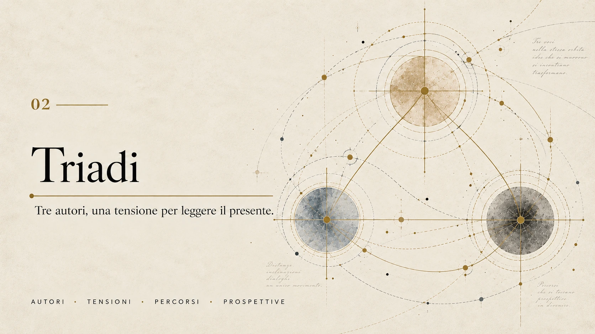

Cerchi d’inchiostro
Triadi
Ogni triade accosta tre autori intorno a una domanda sul presente. Scegli quella che ti riguarda.

Le quattordici triadi
XIV Legge, colpa, punizioneSofocle · Michel Foucault · Cesare Beccaria Chi può trasformare un atto in colpa, e fino a dove arriva il diritto di punire?
Sono problemi diversi: il rispetto dovuto ai morti, la classificazione amministrativa del rischio, il potere penale dello Stato. Accostarli non significa dichiararli equivalenti. Il loro punto di contatto sta nella possibilità di opporsi a una decisione che pretende di conoscere già tutto ciò che conta.
Leggi il testo integraleLe tre guide


XIII Conoscenza, conseguenze e decisioneEdgar Morin · Rachel Carson · John Maynard Keynes Chi può permettersi di attendere quando agire comporta rischi duraturi, ma anche rinviare una decisione ha un costo?
Morin interroga i limiti della conoscenza e le relazioni che ogni spiegazione rischia di trascurare. Carson segue gli effetti di un intervento negli ecosistemi, spesso oltre il tempo e il luogo della decisione. Keynes mostra come l'incertezza possa frenare investimenti e occupazione, trasferendo su altri il costo dell'attesa.
La tensione fra i tre conduce a una domanda civile: chi dispone del tempo per scegliere e chi deve sopportare le conseguenze mentre altri decidono?
Le tre guide


XII Stato, impresa e comunitàEnrico Mattei · Aristide Merloni · Adriano Olivetti Quando cambia chi guida un'impresa, chi conserva il potere di deciderne il futuro, e quanto di quel potere rimane al territorio?
Le tre guide possono essere lette come un percorso di domande reciproche: la costruzione delle capacità economiche, il radicamento del lavoro e il problema delle istituzioni capaci di assumere responsabilità sul loro uso. Ogni storia conserva ragioni, esiti e contraddizioni propri.
Leggi il testo integrale
Triade 12 — Stato, impresa e comunità
Domanda di lettura: Quando cambia chi guida un'impresa, chi conserva il potere di deciderne il futuro, e quanto di quel potere rimane al territorio?
Nel 1953 Enrico Mattei e Aristide Merloni si incontrano a Fabriano. Mattei cerca nuove possibilità industriali e occupazionali nelle Marche interne; Merloni, eletto sindaco della città nel 1951, guida già un'impresa di bilance. La proposta iniziale dell'AGIP prende un'altra strada: Merloni sceglie di produrre bombole per gas liquefatto, applicando competenze maturate con le bilance. A Ivrea, nello stesso decennio, Adriano Olivetti guida una fabbrica che compete sui mercati internazionali e tenta di dare una forma politica alla comunità che vive attorno a essa.
Ho voluto riunire queste tre storie perché in ciascuna l'economia diventa una questione di potere pubblico. Mattei cerca autonomia per un paese attraverso l'impresa dello Stato. Merloni porta lavoro e capacità industriale in un territorio e agisce anche nelle istituzioni politiche. Olivetti si chiede chi debba partecipare alle decisioni dell'impresa e della comunità. Stato, impresa e comunità compaiono in tutte e tre le esperienze; cambiano la scala, gli strumenti e il rapporto fra decisione economica e responsabilità collettiva. Sono esperienze diverse, con risultati e limiti che le tre guide ricostruiscono senza confonderli.
Adriano Olivetti muore il 27 febbraio 1960, Enrico Mattei il 27 ottobre 1962, Aristide Merloni il 19 dicembre 1970. In poco più di dieci anni vengono meno tre uomini che avevano dato all'impresa anche una funzione politica. Le organizzazioni continuano a vivere. La prova diventa un'altra: capire quanto delle loro scelte possa durare oltre chi le ha volute. Fabbriche, prodotti e competenze possono sopravvivere. Ma chi deciderà che cosa farne?
La prova del presente
Oggi il potere economico si esercita anche attraverso le infrastrutture digitali. Secondo un’analisi pubblicata da Synergy Research Group il 24 luglio 2025, i servizi infrastrutturali cloud di Amazon, Microsoft e Google rappresentavano insieme circa il 70% del mercato europeo. Nel giugno 2026 la Commissione europea ha presentato un pacchetto sulla sovranità tecnologica. La domanda di Mattei ritorna in un altro contesto: quanta libertà di scelta possiede un paese quando le infrastrutture indispensabili alla sua economia dipendono da decisioni prese altrove?
Successione e proprietà mostrano altri assetti ancora. Il 1° settembre 2026 John Ternus è subentrato a Tim Cook alla guida di Apple, mentre Cook ha assunto la presidenza esecutiva: una successione annunciata mesi prima, in un’impresa che nel 2011 aveva già vissuto il passaggio da Steve Jobs, uno dei suoi fondatori, a Cook. In Meta, invece, Mark Zuckerberg conserva la maggioranza dei diritti di voto attraverso una struttura azionaria che distingue il peso economico della proprietà dal potere di controllo. Il capitale è in gran parte distribuito fra molti investitori; la capacità di determinare gli indirizzi societari rimane concentrata.
Sono assetti lontani da quelli di Mattei, Merloni e Olivetti. Permettono tuttavia di riprendere le loro domande sul terreno attuale: quali capacità rendono autonoma un'economia, quali istituzioni consentono a un'impresa di durare e quale parte delle decisioni appartiene a coloro che ne vivono le conseguenze?
Riferimenti contemporanei verificati al 18 novembre 2026. La quota del mercato cloud è tratta dall’analisi Synergy Research Group pubblicata il 24 luglio 2025.
Continua con le tre guide
Enrico Mattei — Energia, impresa pubblica e autonomia · Aristide Merloni — Impresa, lavoro e destino dei luoghi · Adriano Olivetti — La comunità e il potere
Le tre guide


XI Guerra, decisione e limiteTucidide · Carl Schmitt · Carl von Clausewitz Che cosa accade all’ordine politico quando la guerra mette alla prova il giudizio, la decisione e i limiti della forza?
Tucidide mostra come la guerra investa il giudizio e la parola della città; Schmitt interroga la decisione che pretende di custodire o rifondare l’ordine; Clausewitz analizza come la forza militare incontri lo scopo politico, l’attrito e la resistenza dell’avversario. La sequenza è editoriale, non cronologica: la triade tiene distinti tre modi di pensare il conflitto e domanda a quali condizioni la politica possa riconoscerne i limiti.
Le tre guide


X Materia, medium e informazioneLucrezio · Marshall McLuhan · Claude Shannon Che cosa cambia fra percepire il mondo e trasmettere un segnale?
La decima soglia non racconta una genealogia della comunicazione. Lucrezio interroga la materia e il modo in cui il reale raggiunge i sensi; McLuhan osserva i media come ambienti che riorganizzano percezione, scala e relazioni; Shannon misura ciò che può essere rappresentato e trasmesso attraverso un canale sottoposto a vincoli e rumore. Materia, medium e informazione restano tre livelli irriducibili che il presente tende facilmente a sovrapporre.
Le tre guide


IX Desiderio, relazione e giudizioEpicuro · Gabriel Tarde · Daniel Kahneman Quanto della nostra scelta prende forma prima che decidiamo?
La nona soglia entra nelle condizioni che preparano la scelta. Epicuro interroga desideri, paure e bisogni che delimitano lo spazio della libertà; Tarde mostra come credenze e desideri prendano forma nella relazione sociale, tra imitazione, invenzione, opposizione, conversazione e pubblici; Kahneman osserva il giudizio sotto incertezza, dove euristiche, bias e framing possono orientare la decisione. La triade non conduce a un determinismo della scelta: desiderio, ambiente sociale e giudizio si modificano reciprocamente, ed è dentro questa tensione che la libertà torna a essere una domanda.
Le tre guide


VIII Comune, formazione e mutazioneAlessandro Manzoni · Carlo Collodi · Pier Paolo Pasolini Come si forma un popolo, e quando l’educazione diventa omologazione?
L’ottava soglia chiede chi e che cosa forma un popolo. Manzoni interroga le condizioni linguistiche, storiche e istituzionali di un mondo comune; Collodi segue il soggetto quando ciò che ha imparato incontra desiderio, errore e conseguenze; Pasolini sposta lo sguardo sull’ambiente che rende alcune vite, parole e aspirazioni normali o desiderabili. La tensione comune è costruire un comune senza ridurlo a omologazione.
Le tre guide


VII Élite, massa e governoPolibio · Gaetano Mosca · Vilfredo Pareto Chi governa davvero, e come cambiano i pochi che governano?
La settima soglia entra nel governo dei pochi senza ridurre la politica a complotto. Polibio osserva come le forme si compongono e decadono; Mosca porta lo sguardo sulla minoranza organizzata che rende operative le istituzioni; Pareto segue disposizioni, giustificazioni e circolazione che trasformano le classi dirigenti. La domanda comune riguarda il rapporto fra forma, organizzazione e ricambio del potere.
Le tre guide


VI Repubblica, opinione e decisioneCicerone · Alexis de Tocqueville · Nicolas de Condorcet Come può una repubblica correggere una decisione condivisa?
La sesta soglia segue la forma politica della libertà. Cicerone pone la cosa pubblica, la legge e il dovere; Tocqueville osserva l’ambiente democratico in cui si formano opinione, conformismo e partecipazione; Condorcet interroga l’istruzione e le procedure attraverso cui i giudizi individuali diventano decisione collettiva.
Le tre guide


V Interpretazione, denaro, scambioAverroè · Georg Simmel · Adam Smith Che cosa rende possibile lo scambio fra sconosciuti?
La quinta soglia attraversa ciò che tiene insieme una civiltà quando il senso deve essere interpretato, il valore diventa comparabile e la fiducia permette lo scambio tra sconosciuti.
Le tre guide


IV Inconscio, egemonia, sovranitàFreud · Gramsci · Hobbes Perché obbediamo anche quando nessuno ce lo impone?
La quarta soglia attraversa le forme dell’obbedienza. Freud mostra il soggetto diviso, Gramsci la costruzione culturale del consenso, Hobbes il momento in cui la vulnerabilità cerca protezione nella forma sovrana.
Le tre guide


III Tempo, forma, disincantoSeneca · Aristotele · Weber Quale forma dare al tempo che ci è concesso?
La terza soglia non si limita a diagnosticare la crisi. Chiede quali strutture permettano ancora a una vita, a una comunità e a una decisione di non dissolversi dentro accelerazione, apparato e perdita di forma.
Le tre guide


II Capitale, valori, desiderioMarx · Nietzsche · Leopardi Che cosa accade al desiderio quando lavoro e valori entrano in crisi?
La seconda soglia legge la modernità come ferita: la macchina economica che organizza il lavoro, la crisi dei valori che lascia l’uomo esposto al vuoto, la sproporzione del desiderio davanti a un mondo finito.
Le tre guide


I Verità, lingua, poterePlatone · Dante · Machiavelli Chi può dire il vero alla città?
La prima soglia apre la domanda su chi possa dire il vero, quale lingua sia capace di reggere una civiltà e come il potere si mostri nella sua realtà effettuale, oltre le immagini che produce di sé.
Le tre guide


Come si legge la sequenza
Cerchi d’inchiostro non è un archivio di autori, ma una mappa progressiva di domande. Ogni autore entra in relazione con altri autori, apre una soglia e permette di leggere un tratto del presente senza ridurlo a cronaca.
Perché triadi
Il presente attraverso tre sguardi
Ogni triade raccoglie tre nodi di una stessa costellazione. Un autore non viene isolato come nome da ricordare, ma letto dentro una domanda comune: quale verità può fondare una città, quale ferita attraversa la modernità, quali forme consentono ancora di abitare il tempo.
La sequenza non ordina soltanto guide già pubblicate. Disegna quattordici soglie di lettura: verità, lingua e potere; capitale, valori e desiderio; tempo, forma e disincanto; inconscio, egemonia e sovranità; interpretazione, denaro e scambio; repubblica, opinione e decisione; élite, massa e governo; comune, formazione e mutazione; desiderio, relazione e giudizio; materia, medium e informazione; guerra, decisione e limite; Stato, impresa e comunità; conoscenza, conseguenze e decisione; legge, colpa, punizione. In questo movimento gli autori diventano strumenti civili per capire il presente.
La sequenza
Dal vero al governo reale, fino a conoscenza, conseguenze e decisione
Il percorso comincia dalla domanda su verità, lingua e potere: ciò che fonda una città, orienta una visione e rende visibile la forza. Attraversa poi la modernità come ferita di capitale, valori e desiderio: produzione, nichilismo, infinito interiore. Arriva a tempo, forma e disincanto, dove la questione non è più solo riconoscere la crisi, ma capire quali strutture possano ancora contenerla senza mentire. Con Freud, Gramsci e Hobbes la mappa entra nelle forme dell’obbedienza: il soggetto che non coincide con sé, il consenso che si forma nel senso comune, la sovranità che ritorna quando la paura chiede ordine. Con Averroè, Simmel e Smith attraversa interpretazione, denaro e scambio: il senso da comprendere, il valore che diventa comparabile, la fiducia che permette cooperazione tra sconosciuti. Con Cicerone, Tocqueville e Condorcet la mappa entra nella forma politica della libertà: la cosa pubblica da custodire, l’opinione democratica da rendere plurale, la decisione collettiva da formare e mantenere aperta alla correzione. Con Polibio, Mosca e Pareto passa poi dalla forma delle istituzioni alle minoranze che le rendono operative e alle forze che ne determinano il ricambio: costituzione, organizzazione e circolazione delle élite diventano tre livelli di una stessa domanda sul governo reale. Con Manzoni, Collodi e Pasolini la mappa entra infine nel problema della formazione: le condizioni del comune, la prova dell’esperienza e la forza educativa dell’ambiente mostrano che un popolo prende forma anche attraverso lingue, istituzioni, desideri e modelli di vita. La tensione che chiude l’ottava soglia è quella di un comune capace di esistere senza trasformarsi in omologazione. La nona soglia riapre il movimento nel punto in cui la scelta sembra più individuale: Epicuro interroga ciò che ci muove prima della decisione, Tarde segue il modo in cui credenze e desideri prendono forma tra gli altri, Kahneman mostra come il giudizio trasformi quella materia in decisione sotto incertezza. Desiderio, ambiente sociale e giudizio non formano una catena rigida: si correggono, si rafforzano e si deformano reciprocamente. La domanda che emerge è quanto della libertà si giochi prima del momento in cui diciamo di aver scelto. La decima soglia cambia piano: Lucrezio porta la mappa alla costituzione materiale del reale, McLuhan agli ambienti che organizzano l’esperienza, Shannon ai limiti formali della trasmissione.
Materia, medium e informazione restano tre livelli distinti; l’undicesima porta la mappa dentro il conflitto armato: Tucidide mostra come la guerra investa la città e il giudizio; Schmitt interroga la decisione e l’ordine politico; Clausewitz misura lo scarto fra scopo e forza.
La dodicesima soglia mette in relazione la capacità industriale pubblica di Mattei, il radicamento del lavoro nei luoghi di Merloni e la domanda di Olivetti sulle istituzioni della partecipazione. Le tre guide sono pubblicate: il confronto tiene distinte le esperienze e le responsabilità dei protagonisti.
Conoscenza, conseguenze e decisione
Morin interroga i limiti della conoscenza e le relazioni che ogni spiegazione rischia di trascurare. Carson segue gli effetti di un intervento negli ecosistemi, spesso oltre il tempo e il luogo della decisione. Keynes mostra come l'incertezza possa frenare investimenti e occupazione, trasferendo su altri il costo dell'attesa.
Legge, colpa, punizione
Le tre opere non compongono una teoria comune. Ci obbligano a mantenere aperte domande che il potere tende a considerare risolte.